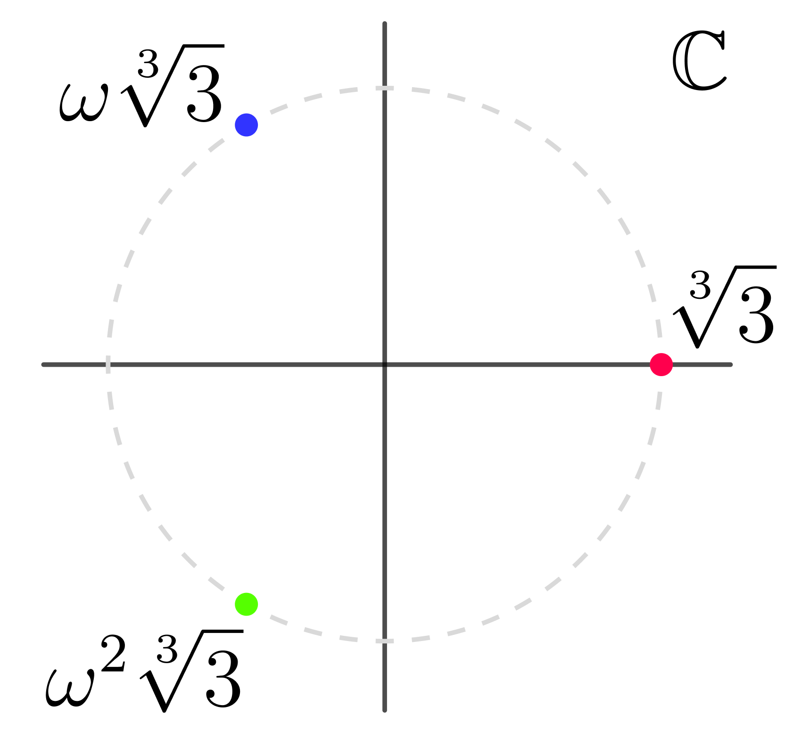
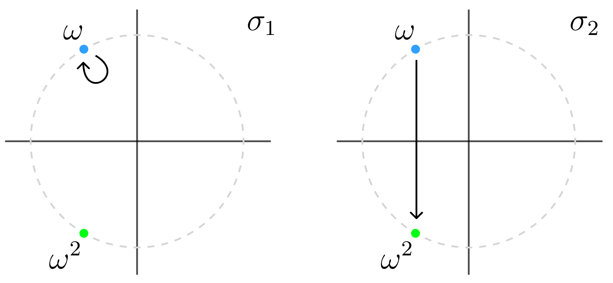
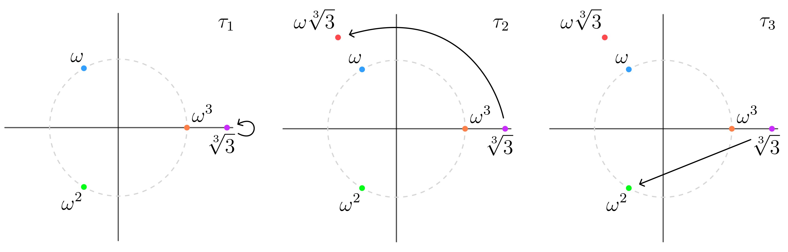
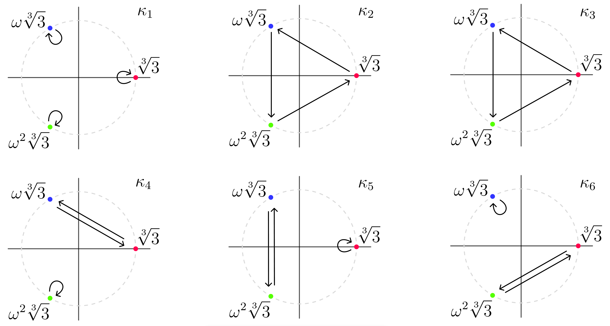

Mystery of the Quintics
I have heard of the Galois Theory, and how it can prove that there doesn't exist a general formula using standard operations ($+,\times,-,\div, \sqrt[n]{}$) for the quintic polynomial $ax^5 + bx^4 + cx^3 + dx^2 + ex + f = 0$. It is quite fascinating because sitting from my ML shoes, it seems like a infinite search space of formulas, and somehow we can show all of them can't solve this equation. As I explored this space, a lot of elegant geometry surprisingly appeared through the form of groups. In this blog I want to attempt explaining the proof through my perspective through the key parts - this isn't a rigorous derivation but instead an illumination of the key machinery. Let's dive in.
We will first recognize the fundamental theorem of algebra, which implies that the roots of a single variable polynomial with coefficients $\in \mathbb{C}$ has roots $\in \mathbb{C}$. Now that we know the space we are operating in, we need to introduce the notion of fields. A field is a set $F$ that has 2 binary operations $(+, \times)$ obeying the following properties:
- addition
- if $a,b \in F \Rightarrow a + b \in F$
- $+$ is associative and commutative
- $\exists 0 \in F$ such that $a + 0 = a$
- $\forall a \in F, \exists$ unique $-a$ such that $a + (-a) = 0$
- multiplication
- If $a,b \in F \Rightarrow a \times b \in F$
- $\times$ is associative and commutative
- $\exists 1 \in F$, with $1 \neq 0$, such that $a \times 1 = a$
- $\forall a \in F \setminus \{0\}, \exists$ unique $a^{-1} \in F$ such that $a \times a^{-1} = 1$
- distributive
- $a \times (b + c) = a \times b + a \times c \quad \forall a,b,c \in F$
This isn't just like a usual vector space, because we can multiply elements, and this induces an interesting geometry we will see later. The first key mechanism we need is field extensions. Let $\mathbb{Q}$ be the field of rational numbers, and we can extend it with a number that isn't in $\mathbb{Q}$ such as $\sqrt{2}$ which can be written as the solution to a polynomial with coefficients in $\mathbb{Q}$ : $x^2 - 2 = 0$. The extension is denoted as $\mathbb{Q}(\sqrt{2}) \coloneqq \{a + b\sqrt{2} \mid a,b \in \mathbb{Q} \}$. But why do we care about extensions?
When building a general formula like the famous $$\frac{-b \pm\sqrt{b^2-4ac}}{2a}$$ the coefficients live in $\mathbb{Q}$ but then we have $\sqrt{b^2-4ac}$. This requires us to extend the field $\mathbb{Q}$ to $\mathbb{Q}(\sqrt{b^2-4ac})$. From this perspective, searching for a formula using $+,\times,-,\div, \sqrt{}$ is equivalent to searching over sequences of field extensions, where each radical expands the field until the roots are representable within it.
Now there is some interesting geometry behind each field extension. To uncover this we need to introduce another formalism: the automorphism. A K-Automorphism is a field isomorphism $$\sigma: L \rightarrow L$$ that preserves all field operations and fixes the base field $K$, meaning $\sigma(a) = a \quad \forall a \in K$. However, $\sigma$ must send each root to another root of the same minimal polynomial over $K$. because take a polynomial $f(x) \in K[x]$, and if $f(\alpha) = 0$ then $f(\sigma(\alpha)) = 0$ this is because $\sigma$ obeys the algebraic operations. Let's go through a quick example to solidify this: $$f(x) = a_n x^n + \ldots + a_1 x + a_0$$ Then if we apply $\sigma$ we obtain $$\begin{aligned} 0 &= \sigma(f(\alpha)) \\ &= \sigma\!\left(a_n \alpha^n + \cdots + a_1 \alpha + a_0\right) \\ &= \sigma(a_n)\sigma(\alpha^n) + \cdots + \sigma(a_1)\sigma(\alpha) + \sigma(a_0) \\ &= a_n (\sigma(\alpha))^n + \cdots + a_1 \sigma(\alpha) + a_0 \\ &= f(\sigma(\alpha)). \end{aligned}$$ Therefore, as long as $\sigma(\alpha)$ sends $\alpha$ to another valid root then all is good. I want to go through an example to ground these abstract ideas.
Consider the polynomial $$f(x) = x^3 - 3 \in \mathbb{Q}[x]$$ What are the roots, the first obvious one is $\sqrt[3]{3}$ so we have extended the field to $\mathbb{Q}(\sqrt[3]{3})$, but there are more roots missing! We need to extend the field again to include the cube root of unity $\omega = e^{2\pi i / 3}$, $\mathbb{Q}(\sqrt[3]{3}, \omega)$ which now contains the roots $\{\sqrt[3]{3}, \omega \sqrt[3]{3}, \omega^2 \sqrt[3]{3}\}$. Just as a reminder $\mathbb{Q}(\omega,\alpha)=\{a+b\omega+c\alpha+d\omega\alpha+e\alpha^2+f\omega\alpha^2\mid a,b,c,d,e,f\in\mathbb{Q}\}$. Note that the minimal polynomial for $\omega$ over $\mathbb{Q}$ is $\omega^2 + \omega + 1 = 0$.

Here are the roots plotted in the complex plane, notice that they are on the perimeter of the circle, that is due to the roots of unity rotating $\sqrt[3]{3}$ around. So now that we know what the roots are, how can we figure out all the valid automorphisms: $\text{Aut}(\mathbb{Q}(\sqrt[3]{3}, \omega) / \mathbb{Q})$. Since our polynomial is small we can figure it out manually by hand, but we can take a more programmatic approach by progressively extending the field. First we consider: $$\text{Aut}(\mathbb{Q}(\omega) / \mathbb{Q})$$

This looks oddly like a group. In fact it is, I haven't properly introduced the notation I have been using: $\text{Aut}(L/K)$ is a group of automorphisms such that each automorphism: $\sigma: L \rightarrow L$ while fixing the elements in $K$. There is an important condition on $L,K$ which is the extension $L / K$ is normal and separable. Separable means every element of $L$ has a minimal polynomial over $K$ with no repeated roots, and normal means $L$ contains all the roots of any polynomial in $K[x]$ that has even one root in $L$ (equivalently, $L$ is a splitting field over $K$). Now let's look at the next group: $$\text{Aut}(\mathbb{Q}(\omega, \sqrt[3]{3}) / \mathbb{Q}(\omega))$$

We get a reflection looking group. In fact, $\text{Aut}(\mathbb{Q}(\omega) / \mathbb{Q}) \cong C_2$ and $\text{Aut}(\mathbb{Q}(\omega, \sqrt[3]{3}) / \mathbb{Q}(\omega)) \cong C_3$. Its tempting to think that finally we can figure out the group structure for $\text{Aut}(\mathbb{Q}(\omega, \sqrt[3]{3}) / \mathbb{Q})$ by taking the direct product $\text{Aut}(\mathbb{Q}(\omega) / \mathbb{Q}) \times \text{Aut}(\mathbb{Q}(\omega, \sqrt[3]{3}) / \mathbb{Q}(\omega))$. However this is not correct because these groups interact with eachother in a non-trivial way - we can't compose their automorphisms in any order, that would change the output (try it out). Instead we need to follow a fixed order, where we perform the reflection $(\text{Aut}(\mathbb{Q}(\omega) / \mathbb{Q}) \cong C_2)$ and then follow with the rotation $(\text{Aut}(\mathbb{Q}(\omega, \sqrt[3]{3}) / \mathbb{Q}(\omega))\cong C_3)$. This can be written using the semi-direct product notation $\rtimes$: $$\text{Aut}(\mathbb{Q}(\omega, \sqrt[3]{3}) / \mathbb{Q}) \cong \text{Aut}(\mathbb{Q}(\omega, \sqrt[3]{3}) / \mathbb{Q}(\omega)) \rtimes \text{Aut}(\mathbb{Q}(\omega) / \mathbb{Q})$$

We can see in this illustration: $\kappa = \tau(\sigma)$. So we can see how the group of symmetries progressively grows. The key goal of the next step is to see what property does the final group after the successive extensions have?
We can start stacking field extensions, where at each step we are adding all roots of the polynomial $x^{n_i} = \alpha_i$. I will be using $\zeta_i$ to denote the root of unity. $$ \begin{aligned} K_0 &\coloneqq \mathbb{Q},\\ K_1 &\coloneqq K_0(\zeta_1),\\ K_2 &\coloneqq K_1(\alpha_1),\\ K_3 &\coloneqq K_2(\zeta_2),\\ K_4 &\coloneqq K_3(\alpha_2),\\ &\ \vdots\\ K_{2r-1} &\coloneqq K_{2r-2}(\zeta_r),\\ K_{2r} &\coloneqq K_{2r-1}(\alpha_r). \end{aligned} $$ What are properties of this final group? To set our notation, let's define a Galois Group first: if $K \subseteq L$ is a field extension, $$\text{Gal}(L/K) = \text{Aut}(L/K) = \{\sigma \in \text{Aut}(L) \mid \sigma(a) = a \forall \,\,\,a \in K\}$$ When $L/K$ is normal and separable (all the roots are distinct and in the , the Galois group has some nice properties such as $\mid \text{Gal}(L/K) \mid = [L : K]$. We will be dealing with only normal and separable because of how we are adding the roots of unity followed by the root of $x^{n_i} = \alpha_i$. We are interested in discovering some properties of the final group $$\text{Gal}(K_{2r} / K_0)$$ Let's think a bit inductively. We have the chain of field extensions: $$K_0 \subset K_1 \subset \ldots \subset K_{2r}$$ Then we can define the intermediate groups: $G_i \coloneqq \text{Gal}(K_{2r}/K_i)$ $$G_0 \supseteq G_1 \supseteq \ldots G_{2r} = \{e\} $$ Let's first see how can we find some relation between $G_i$ and $G_{i+1}$. $G_{i+1}$ is a smaller group because it more restrictions : the automorphisms need to fix $K_{i+1}$. Therefore, we can create a group homomorphism $\psi_i: G_i \rightarrow \text{Gal}(K_{i+1} / K_i)$, where each automorphism $\sigma \in G_i$ has its domain restricted to just $K_{i+1}$ : $\psi_i(\sigma) \coloneqq \sigma \mid_{K_{i+1}}$. This makes sense because our extensions are normal and separable, so the roots need to be in their extension, and an element in the $K_{i+1}$ field can't be mapped to a field outside of it. Therefore, $\sigma(K_{i+1}) = K_{i+1}$.
Then we can look at the kernel of $\psi_i$ and it is just $G_{i+1}$ because that fixes $K_{i+1}$. Now we will tap into some group theory theorems, the kernels of homomorphisms are normal, and therefore, because we also know $\text{Gal}(K_{i+1} / K_i)$ is abelian because either extending by the roots of unity or by the $n^\text{th}$ root of a number in the previous field results in permutations that are cyclic, hence commute: in the roots-of-unity step the Galois group sits inside $(\mathbb{Z}/n\mathbb{Z})^\times$ - which is the multiplicative group of integers mod n, and in the "adjoin an $n^{\text{th}}$ root" step (once the $n^{\text{th}}$ roots of unity are present) every automorphism is determined by sending $\alpha^{1/n}\mapsto \zeta_n^k\,\alpha^{1/n}$, so the permutations form a cyclic subgroup of $\langle \zeta_n\rangle$. This means that the quotient $G_i / G_{i+1}$ is well defined and by the first isomorphism theorem of group theory, $G_i/G_{i+1} \cong \text{im}(\psi_i) \leq \text{Gal}(K_{i+1}/K_i)$ and since subgroups of abelian groups are also abelian we can build a chain that implies $G_0$ is a solvable group which by definition means: there exists a chain of normal subgroups such that the quotient at each step is abelian. The notation is: $$G_0 \unrhd G_1 \unrhd \ldots G_{2r-1} \unrhd G_{2r}$$ I wanted to provide some intuition for what we just covered here. First, when we build a formula with radicals it has an underlying set of symmetries. Take a look at the solution for $x^4 + px^2+q=0$, the roots are: (this is taken from [1] which references [2]) $$ \begin{aligned} x_1 &= \sqrt{\frac{-p+\sqrt{p^2-4q}}{2}}, \qquad x_2 = -\sqrt{\frac{-p+\sqrt{p^2-4q}}{2}},\\ x_3 &= \sqrt{\frac{-p-\sqrt{p^2-4q}}{2}}, \qquad x_4 = -\sqrt{\frac{-p-\sqrt{p^2-4q}}{2}}. \end{aligned} $$ For each $\sqrt[2]{}$ notice how we need to consider the $\pm$ because this formula was constructed with intermediate polynomials of degree 2 that have symmetries for their roots which is what the automorphisms capture. As we expand our formula by adding another radical, we are taking the current group of automorphisms $\mathrm{Gal}(K_i/\mathbb{Q})$ and expanding it by allowing new symmetries that come from permuting the newly adjoined roots. In general this attachment isn't straight forward like a direct product as we saw in the earlier example (a semidirect product), but the key intuition is simple: each new radical introduces only a controlled, cyclic-type symmetry. I still want to understand more about how this group grows but that's for another time.
Finally, how do we know there is a quintic that has a Galois group isomorphic to $S_5$? Check out the linked resources for the rigorous proof, but here is the key intuition. Let's take the polynomial: $f(x) = x^5 - 4x + 2$. By Eisenstein's Criterion, $f$ is irreducible over $\mathbb{Q}$. So let's say $\alpha_i\,\,i=1\ldots5$ are the roots of $f$. We can then create the splitting field $L = \mathbb{Q}(\alpha_1, \alpha_2, \alpha_3, \alpha_4, \alpha_5 )$ (note this doesn't mean that $L$ can be replicated through radical extensions). Then using Eisenstein's Criterion, $[\mathbb{Q}(\alpha_i) \colon \mathbb{Q}] = 5$ because the minimal polynomial of $\alpha_i$ is 5. By tower law, $\lvert \text{Gal}(L/\mathbb{Q}) \rvert = [L:\mathbb{Q}] = [L:\mathbb{Q}(\alpha_i)][\mathbb{Q}(\alpha_i):\mathbb{Q}]$. This implies that 5 divides $\lvert \text{Gal}(L/\mathbb{Q}) \rvert$ and then with the use of Cauchy's theorem, since 5 is prime and divides the group size, then the group contains an element of order 5. Therefore, $\text{Gal}(L/\mathbb{Q})$ contains a 5 cycle (ex: $(1 3 5 2 4)$).
Additionally, since complex roots come in conjugates (flip the imaginary sign), we can send them to eachother while fixing $\mathbb{Q}$, a transposition (flips 2 elements). In $f$ specifically, there 3 real roots and consequently that means there are 2 complex roots, and at last, because we have a 5 cycle automorphism and a transposition automorphism and you can prove this generates $S_5$.
Finally, even with computational brute force you can show that $S_5$ is not solvable, and thus since its a subgroup of $S_{n>5}$, and consequently $S_{n>5}$ isn't either because there is a theorem that states if a group is solvable $\Rightarrow$ all its subgroup as as well. Therefore, for a general quintic or beyond we can't use formulas constructed through radicals to find their roots.
References
- 1 https://kth.diva-portal.org/smash/get/diva2:1880199/FULLTEXT01.pdf - Note: the proof here uses the Fundamental Theorem of Galois Theory. I omitted that and went for a simpler one direction proof.
- 2 https://www.jstor.org/stable/41133337?casa_token=Wl_i2AJM6h8AAAAA%3APJnkD1Rzj1ywsOuETKREw4lNC5JTYRuzMHY_xWVgyOcZ1nDLJ8VrwP-AyOR3h8ZBXp-k3Bc5T5UA1PYK8iiLqZCvbIP9HlgtVgx9irpxyFJMKVQmsw
- And ChatGPT